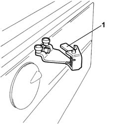
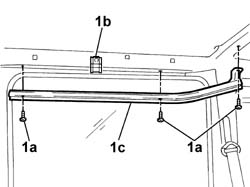
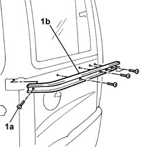
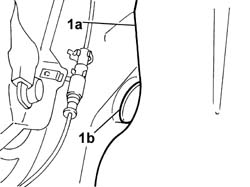
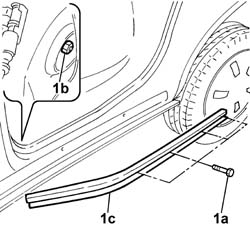

7020C16 SLIDING AND SUPPORTING ELEMENTS for one sliding side door, left or right - R.R.
- Path
- Procedures > 70 FITTINGS > 7020 LOAD CARRYING COMPARTMENT DOORS > 7020C sliding side door > 7020C16 SLIDING AND SUPPORTING ELEMENTS for one sliding side door, left or right - R.R.
- Kind
- repair procedure (removal / refitting; the operation number is the code)
- Applies to
- all engines; all production periods
- Interactive page
- https://sloeber94.github.io/elrnDB-fDbl/en/#/2585049
Applies to: all engines; all production periods
 Removing
Removing
 Refitting
RefittingOp. 7020C12 SLIDING SIDE DOOR END OF TRAVEL STOP LEFT OR RIGHT - R.R.
Applies to: all engines; all production periods; only with equipment: Doblò trim level
Op. 7020C40 SLIDING SIDE DOOR UPPER GUIDE TRIM (ONE) LEFT OR RIGHT - R.R.
Op. 7040L44 REAR DOOR HOUSING RUNNING BOARD (ONE), LEFT OR RIGHT - R.R.
Applies to: all engines; all production periods; only with equipment: Doblò trim level
1. Lift and remove the door runner from the central guide.
Do the same for the sliding door's top and bottom runners.

Applies to: all engines; all production periods; only with equipment: Doblò trim level
1. Undo the fixing bolts (1a), slacken the bolt (1b) and remove the top guide (1c).

Applies to: all engines; all production periods; only with equipment: Doblò trim level
1. Undo the fixing bolts (1a) and remove the central guide (1b).

Applies to: all engines; all production periods; only with equipment: Doblò trim level
1. Move aside slightly the rear carpet (1a), at the foot of the central pillar, in order to remove the protective cap (1b).

Applies to: all engines; all production periods; only with equipment: Doblò trim level
1. Undo the fixing bolts (1a) and nut (1b), positioned inside the interior compartment under the rear mat, and remove the bottom guide (1c).

Applies to: all engines; all production periods
Refitting
RemovingPosition the bottom guide and secure it with the nut and bolts.
Applies to: all engines; all production periods; only with equipment: Doblò trim level
Fit the protective cap and reposition the rear carpet.
Applies to: all engines; all production periods; only with equipment: Doblò trim level
Fit the central and top guide and secure them with the bolts to the bodywork.
Fit the sliding side door's top, central and bottom runners on the guides.
Applies to: all engines; all production periods; only with equipment: Doblò trim level
Op. 7040L44 REAR DOOR HOUSING RUNNING BOARD (ONE), LEFT OR RIGHT - R.R.
Op. 7020C40 SLIDING SIDE DOOR UPPER GUIDE TRIM (ONE) LEFT OR RIGHT - R.R.
Applies to: all engines; all production periods; only with equipment: Doblò trim level
Op. 7020C12 SLIDING SIDE DOOR END OF TRAVEL STOP LEFT OR RIGHT - R.R.